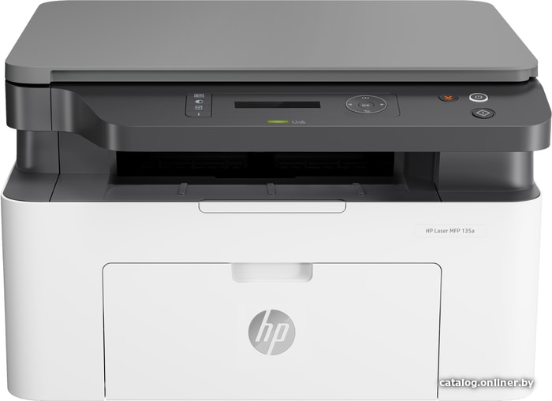

| модель товара |
тип |
описание |
рейтинг |
цена |
 Canon PIXMA MG2540S Canon PIXMA MG2540S |
принтер |
МФУ, струйный, цветной, формат A4 (210x297 мм), скорость ч/б печати 8 стр/мин, скорость цветной печати 4 стр/мин, разрешение 4800x600 dpi |
**** |
66,71р |
| Canon i-SENSYS LBP6030B |
принтер |
МФУ, лазерный, черно-белый, формат A4 (210x297 мм), скорость ч/б печати 18 стр/мин, разрешение 600x400 dpi |
*** |
26,71р |
 Canon i-SENSYS MF3010 Canon i-SENSYS MF3010 |
принтер |
МФУ, лазерный, черно-белый, формат A4 (210x297 мм), скорость ч/б печати 35 стр/мин, разрешение 1200 dpi, LAN |
***** |
326,71р |
| Canon i-SENSYS LBP621Cw |
принтер |
принтер, лазерный, черно-белый, формат A4 (210x297 мм), скорость ч/б печати 18 стр/мин, разрешение 2400x600 dpi |
***** |
356,71р |
| Epson L805 |
принтер |
фотопринтер, струйный, цветной, формат A4 (210x297 мм), скорость ч/б печати 37 стр/мин, скорость цветной печати 38 стр/мин, разрешение 5760x1440 dpi, СНПЧ, Wi-Fi |
***** |
556.71р |
| >Canon i-SENSYS MF264dw |
принтер |
МФУ, лазерный, черно-белый, формат A4 (210x297 мм), скорость ч/б печати 28 стр/мин, разрешение 600 dpi, LAN, Wi-Fi |
*** |
784.71р |
| HP Laser 135a 4ZB82A |
принтер |
МФУ, лазерный, черно-белый, формат A4 (210x297 мм), скорость ч/б печати 28 стр/мин, разрешение 600 dpi, LAN, Wi-Fi |
**** |
303.71р |
| Kyocera Mita ECOSYS M2235dn |
принтер |
МФУ, лазерный, черно-белый, формат A4 (210x297 мм), скорость ч/б печати 40 стр/мин, разрешение 1200 dpi, LAN |
**** |
589.71р |
| Kyocera Mita ECOSYS M2040dn |
принтер |
МФУ, лазерный, черно-белый, формат A4 (210x297 мм), скорость ч/б печати 40 стр/мин, разрешение 1200 dpi, LAN |
**** |
922.00р |
| Kyocera Mita ECOSYS M2040dn |
принтер |
МФУ, лазерный, черно-белый, формат A4 (210x297 мм), скорость ч/б печати 28 стр/мин, разрешение 600 dpi, LAN, Wi-Fi |
*** |
785.00р |